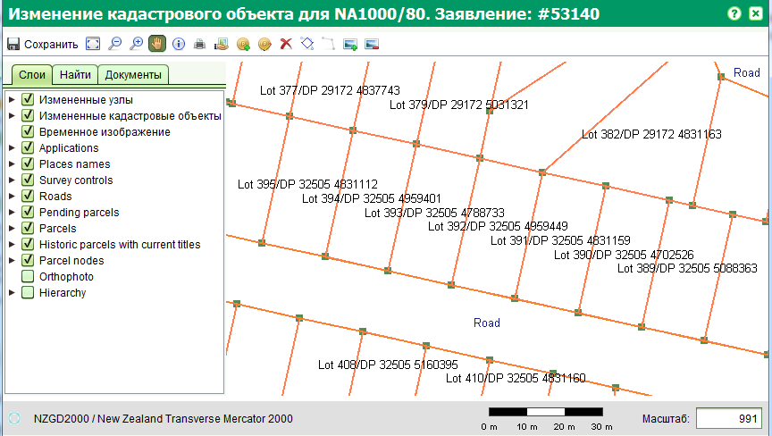
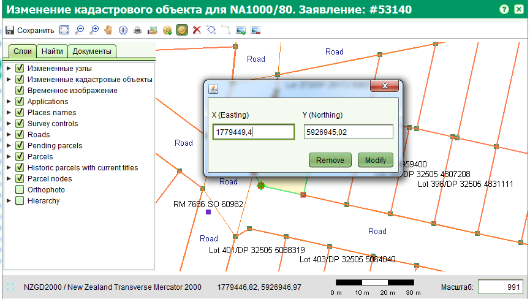
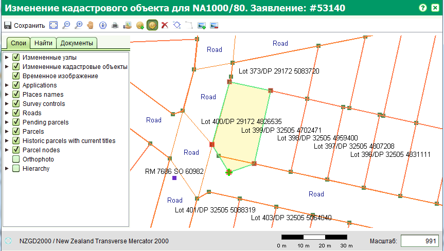

Форма изменения кадастрового объекта позволяет изменять границы существующих кадастровых объектов, включая изменение по узлам (добавляя узлы и изменение координат узлов) и полностью выбранную часть границы. Для открытия этой формы, запустите услугу "Изменение кадастрового объекта" из соответствующего заявления.
Данная форма расширяет компонент просмотра карты следующими дополнительными инструментами:
Узлы представляют собой критический элемент границы. Новые узлы могут быть добавлены при помощи инструмента "Добавить узел". Существующие узлы могут быть выделены и изменены при помощи инструмента выбора узла для изменения его координат.
В появившемся диалоговом окне можно вручную ввести новые координаты узла и применить изменения путем нажатия кнопки "Modify" (изменить). Удалить выбранный узел можно нажав кнопку "Remove" (удалить).
Измененная граница будет отображена зеленым цветом, в то время как старая отображается красным для наглядной разницы между ними.
Все изменения могут быть отменены при помощи инструмента "Перезапуск кадастрового переопределения". После того, как все изменения закончены, сохраните их и нажмите кнопку "Завершить" для услуги "Изменение кадастрового объекта" на форме заявления. Одобрите заявление для вступления изменений в силу. После этого новая граница станет текущей, а старая получить статус истории.
Смотрите также: